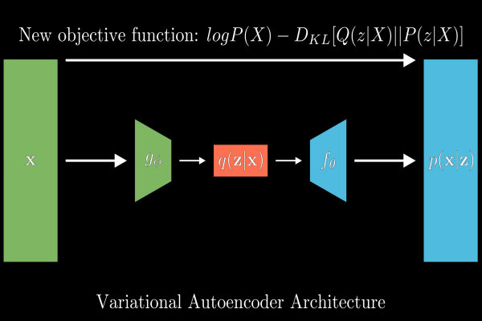

<div id="ajax-page" class="ajax-page-content">
    <div class="ajax-page-wrapper">
        <div class="ajax-page-nav">
            <div class="nav-item ajax-page-close-button">
                <a id="ajax-page-close-button" href="#"><i class="lnr lnr-cross"></i></a>
            </div>
        </div>

        <div class="ajax-page-title">
            <h1>Imperial AI Hack 2020</h1>
        </div>

        <div class="row">
            <div class="col-sm-7 col-md-7 portfolio-block">
                <div class="owl-carousel portfolio-page-carousel">
                    <div class="item">
                        
                    </div>
                </div>

                <!--
                <div class="portfolio-page-video embed-responsive embed-responsive-16by9">
                  <iframe class="embed-responsive-item" src="https://player.vimeo.com/video/97102654?autoplay=0"></iframe>
                </div>
                -->

                <!--
                <div class="portfolio-page-image">
                    
                </div>
                -->

                <script type="text/javascript">
                    jQuery(document).ready(function($){

                        $('.portfolio-page-carousel').owlCarousel({
                            smartSpeed:1200,
                            items: 1,
                            loop: true,
                            dots: true,
                            nav: true,
                            navText: false,
                            margin: 10
                        });

                    });
                </script>
            </div>

            <div class="col-sm-5 col-md-5 portfolio-block">
                <!-- Project Description -->
                <div class="project-description">
                    <div class="block-title">
                        <h3>Description</h3>
                    </div>
                    <ul class="project-general-info">
                        <li><p><i class="fa fa-user"></i> Dema Ushchapovskyy</p></li>
                        <li><p><i class="fa fa-calendar"></i> October, 2019</p></li>
                    </ul>

                    <p class="text-justify">24 hour challenge to predict anomalous behaviors and their cause of an industrial compressor.</p>
                    <p class="text-justify">Experimented with linear and non linear feature extraction and build linear models such as ARIMA and VAR.
                        Final solution was to build a variational autoencoder and cluster the latent representation to identify running regimes of the compressor.
                        The output distributions of the autoencoder were used to identify causality by ranking features by z-scores.</p>
                    <p class="text-justify">Final Place: 1st.</p>
                    <!-- /Project Description -->

                    <!-- Technology -->
                    <div class="tags-block">
                        <div class="block-title">
                            <h3>Technology</h3>
                        </div>
                        <ul class="tags">
                            <li><a>Python</a></li>
                            <li><a>Tensorflow Probability</a></li>
                        </ul>
                    </div>
                    <!-- /Technology -->

                    <!-- Share Buttons -->
                    <!-- /Share Buttons -->
                </div>
                <!-- Project Description -->
            </div>
        </div>
    </div>
</div>